S 350 d · 디젤 6기통
OM 656 M EVO와 통합형 스타터 제너레이터(ISG)를 조합했습니다. 라인업에서 가장 높은 복합연비와 유일한 3등급을 갖췄고, 650Nm 토크가 낮은 회전 영역부터 힘을 보탭니다.
313+23마력 · 650Nm · 13.0km/L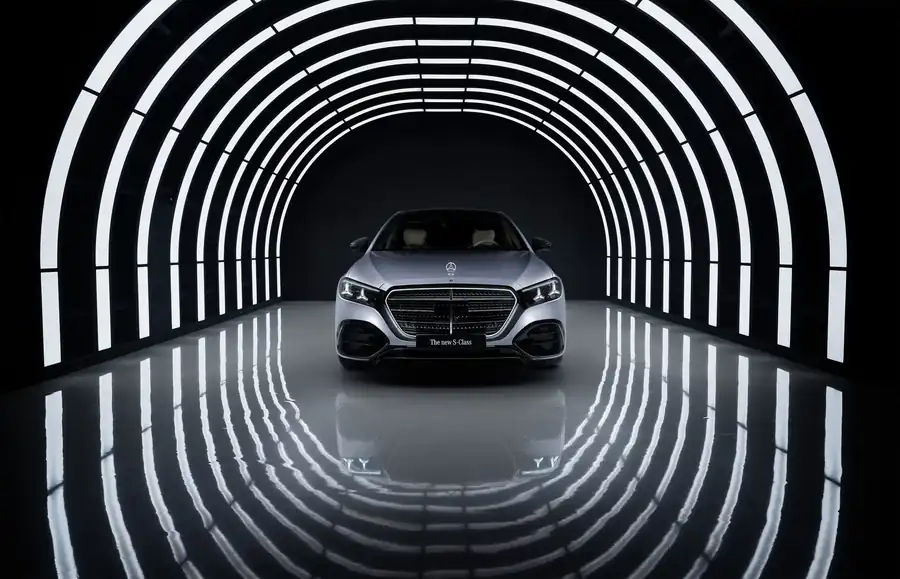
운전석의 기술부터 뒷좌석의 휴식까지. S-Class를 고를 때 살펴볼 차체 길이와 엔진, 트림별 편의 사양을 한곳에 정리했습니다.
직접 운전하는 비중과 뒷좌석에서 보내는 시간을 기준으로 차체 길이와 트림을 비교해 보세요.
숏바디는 전장 5,195mm, 축거 3,106mm입니다. 롱바디는 전장 5,305mm, 축거 3,216mm로, 늘어난 110mm가 뒷좌석 공간에 더해집니다. 아래 가격과 제원은 2027년식 국내 안내 자료 기준입니다.
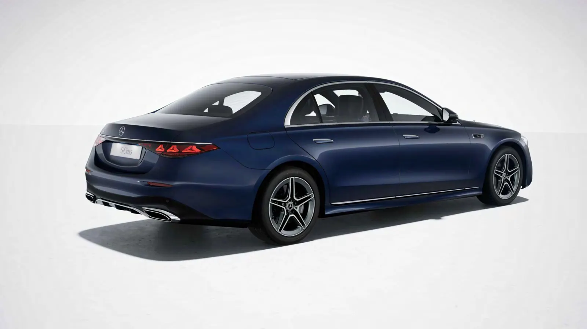
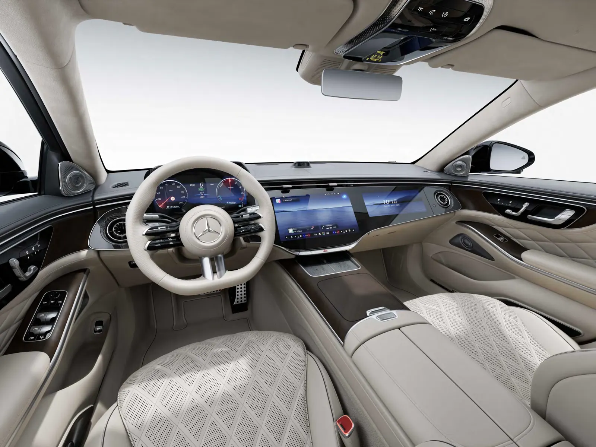
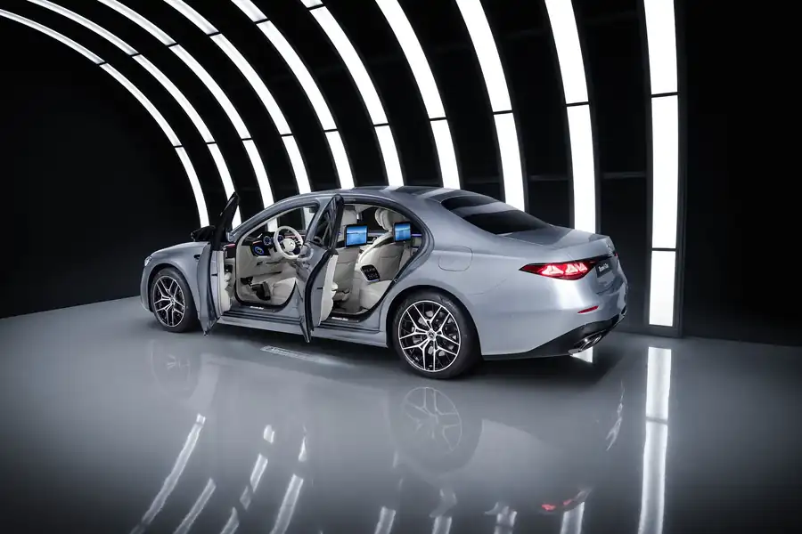
| 모델 | 엔진 | 출력 · 토크 | 0–100km/h | 복합연비 | 가격 |
|---|---|---|---|---|---|
| S 350 d 4MATIC | 직렬 6기통 디젤 2,989cc | 313+23마력 650Nm | 5.4초 | 13.0km/L · 3등급 | 1억 5,400만원 |
| S 450 4MATIC | 직렬 6기통 가솔린 2,999cc | 381+23마력 560Nm | 4.9초 | 10.1km/L · 4등급 | 1억 6,240만원 |
| S 450 4MATIC 롱바디 Exclusive | 직렬 6기통 가솔린 | 381+23마력 560Nm | 4.9초 | 9.6km/L · 4등급 | 1억 7,540만원 |
| S 450 4MATIC 롱바디 AMG Line | 직렬 6기통 가솔린 | 381+23마력 560Nm | 4.9초 | 9.6km/L · 4등급 | 1억 9,540만원 |
| S 500 4MATIC 롱바디 | 직렬 6기통 가솔린 | 449+23마력 600Nm | 4.5초 | 9.8km/L · 4등급 | 2억 2,000만원 |
| S 580 4MATIC 롱바디 | V8 가솔린 3,982cc | 537+23마력 750Nm | 4.0초 | 7.8km/L · 5등급 | 2억 7,000만원 |
전 모델 9G-TRONIC 자동변속기와 4MATIC을 적용합니다. 마력 표기의 +23은 48V 통합 스타터 제너레이터가 더하는 출력입니다. 연비와 CO₂는 국내 인증값이며 실제 주행 결과는 도로·날씨·운전 방식에 따라 달라질 수 있습니다. 가격·구성·판매 여부는 상담 시점에 확인해 주세요.
효율을 중시하는 디젤, 부드러운 가솔린 6기통, 여유로운 V8 중 주행 습관에 맞춰 선택합니다.
OM 656 M EVO와 통합형 스타터 제너레이터(ISG)를 조합했습니다. 라인업에서 가장 높은 복합연비와 유일한 3등급을 갖췄고, 650Nm 토크가 낮은 회전 영역부터 힘을 보탭니다.
313+23마력 · 650Nm · 13.0km/LM 256 M EVO와 48V 마일드 하이브리드 시스템을 사용합니다. 같은 엔진을 바탕으로 S 450은 편안한 일상 주행에, S 500은 더 큰 출력과 빠른 가속에 초점을 둡니다.
S 450 381+23마력 · S 500 449+23마력M 177 EVO 4.0리터 V8의 풍부한 토크와 여유로운 가속을 원하는 고객을 위한 롱바디입니다. 정지 상태에서 시속 100km까지 4.0초가 안내됩니다.
537+23마력 · 750Nm · 4.0초앞좌석 편의는 전 모델에 공통으로 들어갑니다. 뒷좌석 통풍, 안전벨트 구성, 헤드램프와 HUD에서 트림 차이가 선명합니다.
롱바디의 기본 사양부터 S 580과 마이바흐의 증강현실 HUD, 상위 에어백·벨트 구성까지 적용 모델을 표로 비교했습니다.
| 모델 | 주행 보조 | MBUX | HUD | 앞좌석 | 뒷좌석 | 에어백·벨트 | 헤드램프 |
|---|---|---|---|---|---|---|---|
| S 350 d 4MATIC | MB.DRIVE 어시스트 | 슈퍼스크린 | HUD | 열선·통풍 | 열선 | 11개 · 열선 벨트 | 디지털 라이트 |
| S 450 4MATIC 숏바디 | MB.DRIVE 어시스트 | 슈퍼스크린 | HUD | 열선·통풍 | 열선 | 11개 · 열선 벨트 | 디지털 라이트 |
| S 450 4MATIC 롱바디 기본 사양 | MB.DRIVE 어시스트 | 슈퍼스크린 | HUD | 열선·통풍 | 열선·통풍 | 13개 · 열선 벨트 | 디지털 라이트 |
| S 450 4MATIC 롱바디 Exclusive | MB.DRIVE 어시스트 | 슈퍼스크린 | HUD | 열선·통풍 | 열선·통풍 | 11개 · 열선 벨트 | 디지털 라이트 |
| S 450 4MATIC 롱바디 AMG Line | MB.DRIVE 어시스트 | 슈퍼스크린 | HUD | 열선·통풍 | 열선·통풍 | 13개 · 열선 벨트 | 디지털 라이트 |
| S 500 4MATIC 롱바디 | MB.DRIVE 어시스트 | 슈퍼스크린 | HUD | 열선·통풍 | 열선·통풍 | 15개 · 벨트백 · 열선 벨트 | 프로젝션 디지털 라이트 |
| S 580 4MATIC 롱바디 | MB.DRIVE 어시스트 | 슈퍼스크린 | 증강현실 HUD | 열선·통풍 | 열선·통풍 | 15개 · 벨트백 · 열선 벨트 | 프로젝션 디지털 라이트 |
| Mercedes-Maybach S 580 | MB.DRIVE 어시스트 | 슈퍼스크린 | 증강현실 HUD | 열선·통풍 | 열선·통풍 | 15개 · 벨트백 · 열선 벨트 · 벨트 피더 | 프로젝션 디지털 라이트 |
| Mercedes-Maybach S 680 | MB.DRIVE 어시스트 | 슈퍼스크린 | 증강현실 HUD | 열선·통풍 | 열선·통풍 | 15개 · 벨트백 · 열선 벨트 · 벨트 피더 | 프로젝션 디지털 라이트 |
트림별 기본 사양은 제공된 어프로치북 S-Class 사양표를 기준으로 정리했습니다. 선택 사양과 생산 시점별 세부 구성은 계약 전에 확인해 주세요.
2027년식 국내 발표 당시 소개된 한정 구성입니다. 현재 주문 및 배정 가능 여부는 별도로 확인해 주세요.
AMG Line Plus를 더한 구성으로 오팔라이트 화이트 브라이트 외장, 나파 블랙 실내, 10도 리어 액슬 스티어링, 나이트 패키지와 20인치 AMG 휠 등이 안내됐습니다.
안내 가격 2억 300만원MANUFAKTUR 스파클링 블랙 외장과 익스클루시브 나파 마키아토 베이지/마그마 그레이 실내, 익스클루시브 패키지와 전용 트림 구성이 소개됐습니다.
안내 가격 2억 3,900만원특별 사양은 배정 가능한 차량과 생산 시점에 따라 선택 조건이 달라집니다. 일반 트림과의 차이, 실제 내·외장 구성, 최종 가격을 계약 전에 확인하세요.
가격·재고는 상담 시점 기준 확인더 긴 차체와 전용 소재, 한층 여유로운 뒷좌석을 원하는 고객을 위한 별도 라인업입니다.
마이바흐 S-Class는 전장 5,484mm, 축거 3,396mm로 일반 롱바디보다 축거가 180mm 더 깁니다. 국내 안내 자료 기준 5인승이며, 두 가지 엔진을 선택할 수 있습니다.
V8 3,982cc, 48V 마일드 하이브리드. 537+23마력과 750Nm의 토크, 0–100km/h 4.5초가 안내됩니다.
기준 가격 3억 1,700만원5,980cc V12 엔진을 탑재합니다. 국내 안내 사양은 630마력, 900Nm이며 시장별 엔진 구성은 다를 수 있습니다.
기준 가격 4억 700만원일반 S-Class보다 긴 휠베이스와 마이바흐 전용 실내 구성을 바탕으로 뒷좌석 중심의 이동 경험을 제공합니다.
전용 사양과 MANUFAKTUR 구성 상담가격과 엔진 사양은 2027년식 안내 자료 기준입니다. 최신 판매 가격·세부 사양·재고는 상담 시점에 확인해 주세요.
차체 색상과 가죽, 우드·메탈 트림의 조합에 따라 같은 S-Class도 분위기가 달라집니다.
아래는 이전 사전예약 안내 자료에 소개된 대표 색상입니다. 화면 속 색은 기기와 조명에 따라 실제 도장과 다르게 보일 수 있습니다.
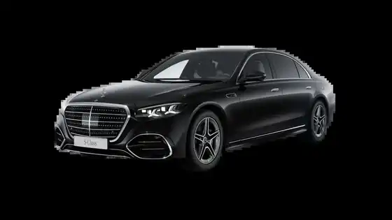
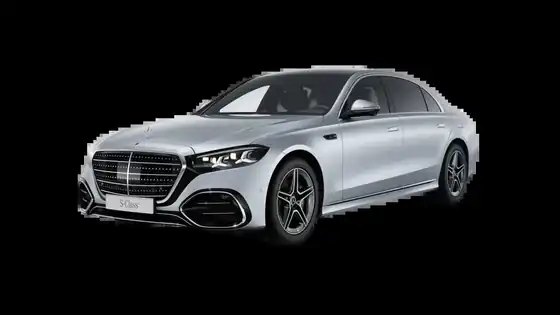
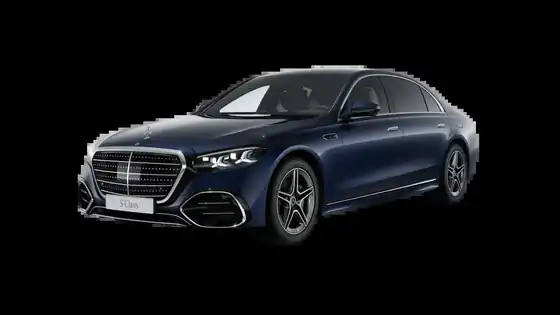
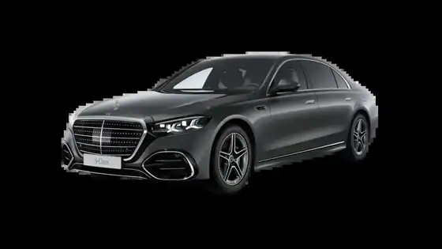
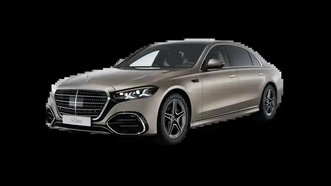
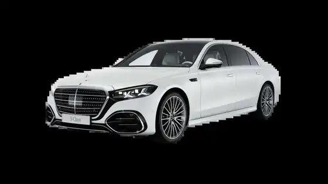
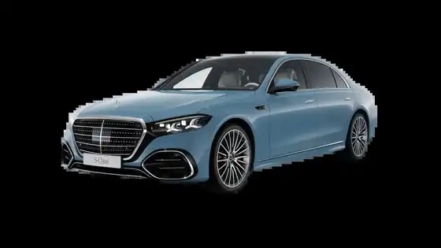
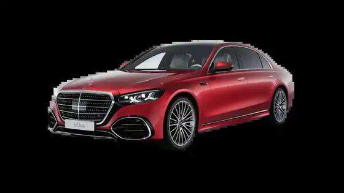
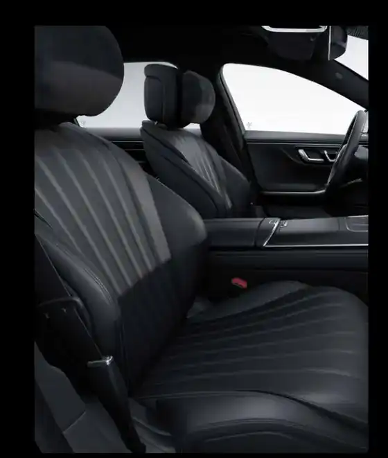
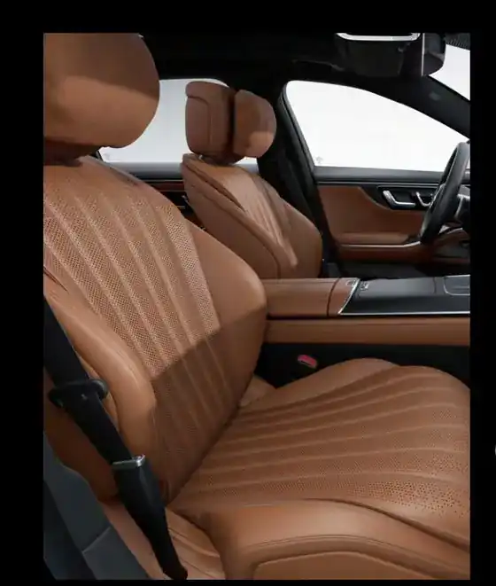
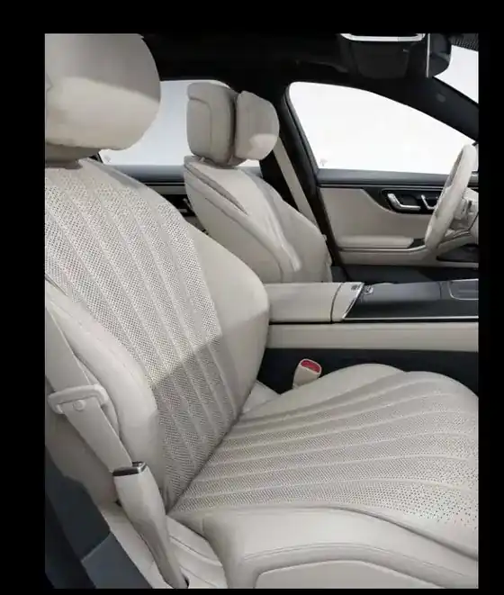
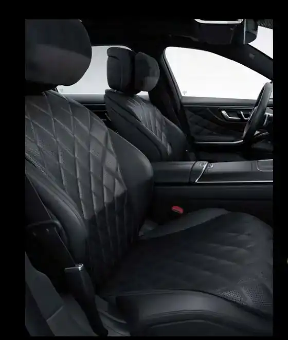
외장 21색과 실내 가죽·트림의 조합은 모델별로 다릅니다. 원하는 색상 코드와 실제 배정 가능 여부를 함께 확인해 드립니다.
이 페이지는 공개된 모델 안내 자료를 바탕으로 구성했습니다. 가격·제원·사양은 연식과 국내 판매 조건에 따라 달라질 수 있으며, 차량 주문·배정 및 구매 조건은 상담 시 확인이 필요합니다.